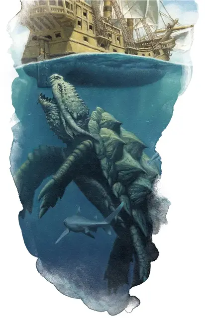

Дракочерепаха
Dragon Turtle
Громадный Дракон, нейтральный

Класс Доспеха 20 (природный доспех)
Хиты 341 (22к20 + 110)
Скорость 20 футов, плавая 40 футов
| мод | спас | ||
|---|---|---|---|
| СИЛ | 25 | +7 | +7 |
| ЛОВ | 10 | +0 | +6 |
| ТЕЛ | 20 | +5 | +11 |
| мод | спас | ||
|---|---|---|---|
| ИНТ | 10 | +0 | +0 |
| МДР | 12 | +1 | +7 |
| ХАР | 12 | +1 | +1 |
Сопротивление урону огонь
Чувства тёмное зрение 120 футов, пассивное Восприятие 11
Языки Акван, Драконий
Опасность 17 (18000 опыта)
Бонус мастерства +6
Среда обитания Побережье, Под водой
Особенности
Амфибия. Дракочерепаха может дышать и воздухом и под водой.
Действия
Мультиатака. Дракочерепаха совершает три атаки: одну укусом, и две когтями. Она может совершить одну атаку хвостом вместо двух атак когтями.
Укус. Рукопашная атака оружием: +13 к попаданию, досягаемость 15 футов, одна цель. Попадание: Колющий урон 26 (3к12 + 7).
Коготь. Рукопашная атака оружием: +13 к попаданию, досягаемость 10 футов, одна цель. Попадание: Рубящий урон 16 (2к8 + 7).
Хвост. Рукопашная атака оружием: +13 к попаданию, досягаемость 15 футов, одна цель. Попадание: Дробящий урон 26 (3к12 + 7). Если цель — существо, она должна преуспеть в спасброске Силы Сл 20, иначе будет оттолкнута на 10 футов от дракочерепахи и сбита с ног.
Паровое дыхание (перезарядка 5–6). Дракочерепаха выдыхает обжигающий пар 60-футовым конусом. Все существа в этой области должны совершить спасбросок Телосложения Сл 18, получая урон огнём 52 (15к6) при провале, или половину этого урона при успехе. Нахождение под водой не даёт сопротивления этому урону.
Опциональные правила
Драконы и врождённое колдовство. Этот дракон от природы может накладывать одно заклинание, 1/день каждое, и ему не требуются для этого материальные компоненты. Уровень каждого заклинания не может быть выше 5-го. Заклинание дракона, имеют Сл спасброска 15, и он имеет +7 к попаданию атаками заклинаниями.
Ниже приведен список предлагаемых заклинаний, но вы также можете выбрать заклинания, отражающие характер дракона. Дракон, который от природы накладывает заклинания друидов, ведёт себя иначе, чем тот, кто накладывает заклинания колдуна. Вы также можете дать дракону заклинания более высокого уровня, чем позволяет это правило, но такая настройка может повысить ПО дракона — особенно если эти заклинания наносят урон или накладывают состояния на цели.
• Власть над водами [control water];
• Туманное облако [fog cloud]. (Fizban's Treasury of Dragons)
Персонализация дракона. Как уже говорилось в «Руководстве Мастера», вы можете настроить блок статистики любого дракона, чтобы отразить его уникальный характер. Незначительные изменения, такие как приведенные ниже, легко сделать, и они не влияют на ПО дракона. (Fizban's Treasury of Dragons)
Языки. Большинство драконов предпочитают говорить на Драконьем, но для общения с союзниками и приспешниками изучают Общий. Но, учитывая высокий Интеллект и продолжительный срок жизни, драконы могут легко выучить дополнительные языки. Вы можете добавить языки в блок статистики дракона.
Навыки. Большинство драконов владеют навыками Восприятие и Скрытность, а многие драконы владеют дополнительными навыками. Как и в случае с языками, вы можете изменить список навыков дракона (даже удвоить бонус мастерства), чтобы отразить его интересы и занятия. Вы также можете наделить дракона владениями инструментами, особенно если дракон проводит время в гуманоидной форме.
Заклинания. Опциональное правило «Бестиария» о том, чтобы сделать драконов с врожденным колдовством, — это простой способ добавить драконам разнообразия, не влияя на их ПО. В Главе 5 «Дракономикон» предлагаются списки заклинаний для разных видов драконов, но вы также можете выбрать заклинания, отражающие характер дракона. Дракон, который от природы накладывает заклинания друидов, ведёт себя иначе, чем тот, кто накладывает заклинания колдуна. Вы также можете дать дракону заклинания более высокого уровня, чем позволяет это правило, но такая настройка может повысить ПО дракона — особенно если эти заклинания наносят урон или накладывают состояния на цели.
Другие черты и действия. Вы можете заимствовать черты и действия у других монстров, чтобы придать дракону уникальную изюминку. Рассмотрим эти примеры:
Изменение формы. Вы можете решить, что дракон приобретает это действие в более раннем возрасте, чем обычно, особенно если вы хотите представить в своей кампании дракона в гуманоидной форме. (См. металлические драконы).
Поглощение урона. Вы можете решить, что красный или золотой дракон не только не получает урон от огня, но и исцеляется от него. (См. мясной голем [flesh golem]).
Облёт. Дракон - проворный летун, быстро вылетающий из зоны досягаемости врагов. (См. перитон [peryton]).
Подражание. Изображение персонажей или их союзников может стать забавным трюком для хитрого дракона. (См. кенку [kenku]).
Омоложение. Вы можете решить, что драконов, которые являются неотъемлемой частью Материального плана, почти невозможно уничтожить. Жизненная сущность дракона может храниться в яйце, из которого он появился на свет, в его кладе или в пещерном зале в центре мира, так же как сущность лича спрятана в филактерии. (См. лич [lich]).
Особые чувства. У большинства драконов есть слепое зрение и темное зрение. Вы можете улучшить зрение до истинного зрения или наделить дракона скоростью рытья или чувством вибрации. (См. зрение и свет).
Прокладывание туннеля. Эта особенность может быть присуща любому дракону, обладающему скоростью копания - он может двигаться сквозь твёрдую породу, оставляя за собой туннель. (См. бурый увалень [umber hulk]).
Описание
Дракочерепахи являются одними из самых страшных существ в океане. Настолько же большие и прожорливые, как и их наземные родичи драконы, дракочерепахи сокрушают своими смертельными челюстями, паровым дыханием и сокрушительным хвостом.
Грубый панцирь дракочерепахи имеет такой же тёмно-зелёный цвет, как и глубокая вода, в которой обитает это чудовище. Серебряные прожилки, подчёркивающие панцирь, напоминают танец света на открытой водной глади, а всплывшую дракочерепаху иногда принимают за отражение солнца или луны на волнах.
Драконы глубин. Как и истинные драконы, дракочерепахи собирают сокровища, сначала топя корабли, и затем просеивая обломки в поисках монет и других драгоценных предметов. Дракочерепахи заглатывают сокровища для транспортировки, а затем срыгивают их, когда добираются до логова.
Дракочерепахи обитают в пещерах, скрытых в коралловых рифах или под морским дном, либо вдоль скалистых участков береговой линии. Если приглянувшаяся пещера уже заселена, дракочерепаха нападает на её нынешних обитателей в попытке захватить пещеру.
Наёмные чудовища. Дракочерепахи достаточно умны, чтобы их можно было подкупить, и пираты, ходящие под парусом по морям, патрулируемым этими существами, быстро учатся предлагать им сокровища в обмен на безопасный проход. Умные сахуагины иногда объединяются с дракочерепахами, соблазняя их сокровищами, чтобы использовать их обжигающее дыхание в качестве оружия в набегах сахуагинов на корабли и прибрежные поселения.
Стихийная мощь. Дракочерепахи иногда проходят через подводные разрывы в планах на Стихийный План Воды. Эти чудовищные экземпляры можно найти на службе маридов, которые крепят на спинах дракочерепах величественные коралловые троны и ездят на них, как на ездовых животных.